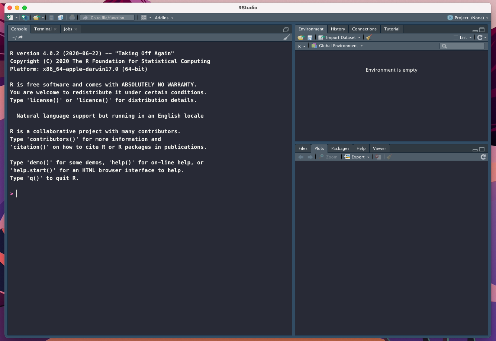
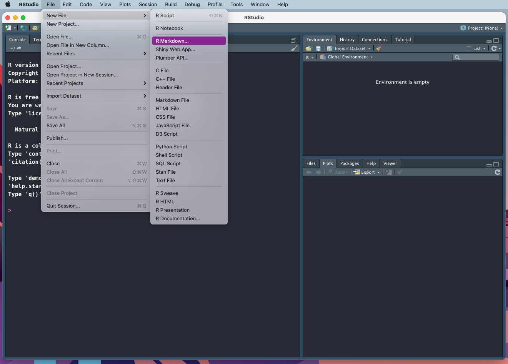
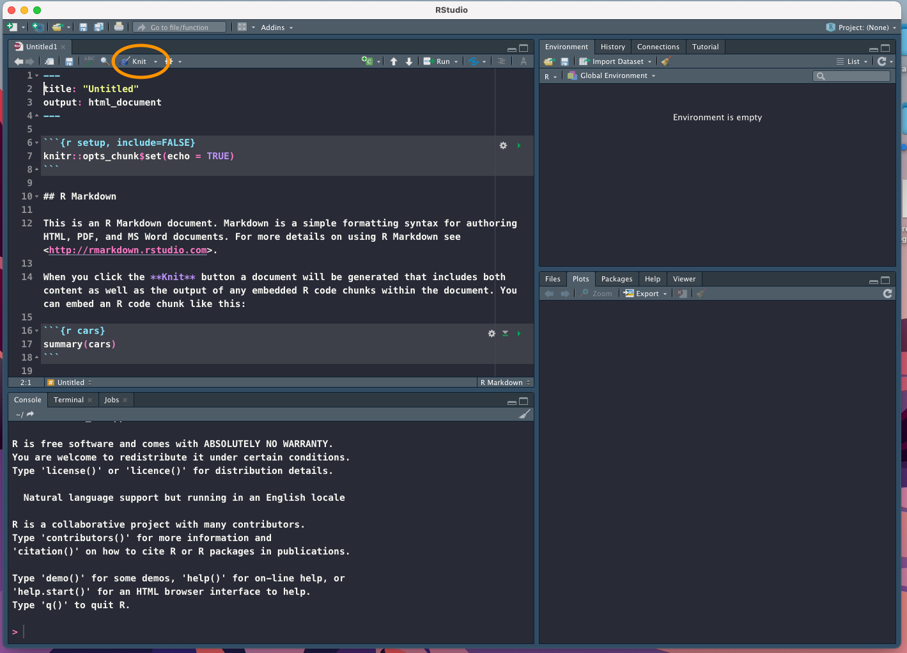

1 Installations
1.1 R
Install R version 3.5.0 or higher
- Go to https://cran.rstudio.com
- Click on the link corresponding to your operating system
- Download the recommended files for your system.
- Run the installer or move the downloaded files to suitable place on your computer.
1.2 RStudio
- Go to https://www.rstudio.com/products/rstudio/download/ to download RStudio Desktop installer
- Following installation, you should be able to open RStudio and see something like this

Figure 1.1: RStudio window view following launching
- A short introduction to RStudio: https://www.rstudio.com/products/rstudio/?wvideo=520zbd3tij
1.3 Markdown
- Markdown (.md) is a lightweight markup language that you can use to add formatting elements to plain text text documents. https://www.markdownguide.org/getting-started/. Originally, Markdown had nothing to do with R.
- The common formatting options: https://www.markdownguide.org/cheat-sheet/
1.4 R Markdown
- R Markdown (.Rmd) allows to combine typing text in Markdown and execute code in R. It is thus great to document data analysis.
- https://rmarkdown.rstudio.com/articles_intro.html
- To open R Markdown in RStudio click
File->New File->R Markdown

Figure 1.2: Opening new R Markdown file within RStudio
- This opens an
Untitled.Rmddocument with example usage of text writing using Markdown and embedded R code in so calledcode chunks. To render .Rmd into .HTML pressKnitrbutton. This should generate .HTML file.Figure 1.3: Rendering .Rmd with Knitr